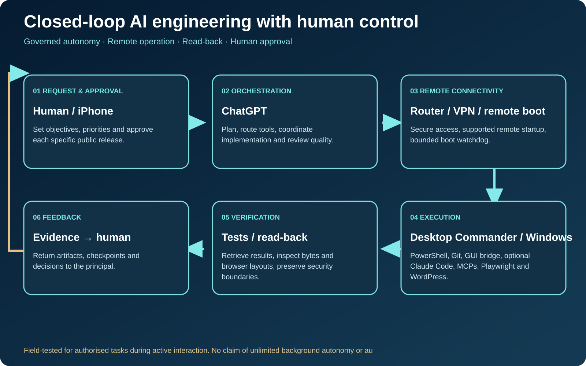

Human direction, ChatGPT orchestration, secure remote connectivity, a Windows engineering workbench and specialist tools form a verifiable feedback loop.

01 · REQUEST & APPROVAL
Human / iPhone
Set objectives, priorities and approve each specific public release.
02 · ORCHESTRATION
ChatGPT
Plan, route tools, coordinate implementation and review quality.
PowerShell, Git, GUI bridge, optional Claude Code, MCPs, Playwright and WordPress.
05 · VERIFICATION
Tests / read-back
Retrieve results, inspect bytes and browser layouts, preserve security boundaries.
06 · FEEDBACK
Evidence → human
Return artifacts, checkpoints and decisions to the principal.
Field-tested for authorised tasks during active interaction. No claim of unlimited background autonomy or automatic continuation after a chat has ended.